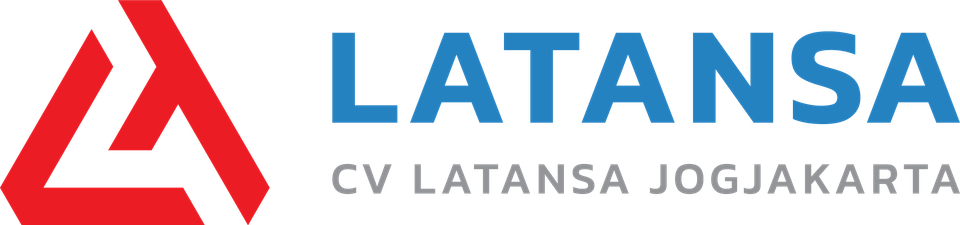
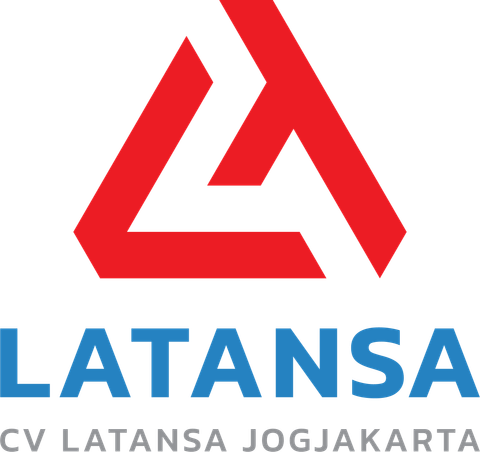

Klisat, Srihardono, Pundong
Kabupaten Bantul
Daerah Istimewa
Yogyakarta 55771
Pemasok barang dan jasa pendukung untuk instansi dan lembaga.
CV. Latansa Jogjakarta adalah perusahaan perdagangan dan pemasok yang berkedudukan di Kabupaten Bantul, Daerah Istimewa Yogyakarta.
Board note: the kop (letterhead) — logo, address, thick-over-thin rule — is the one bold idea. The rule draws in on load; the headline rises from a mask. No eyebrow labels.
Profil perusahaan
CV. Latansa Jogjakarta menyediakan beragam kategori barang serta layanan pendukung terpilih untuk menunjang kebutuhan operasional instansi, lembaga, dan organisasi.
Kami melayani pengadaan melalui kanal resmi yang tersedia, dengan komunikasi yang jelas mengenai spesifikasi, ketersediaan, dan proses pengiriman sesuai kesepakatan.
Bidang usaha
Kategori barang dan layanan yang kami sediakan untuk kebutuhan instansi dan lembaga.
-
Komputer & Teknologi Informasi
Perangkat komputer, perangkat pendukung, dan kebutuhan teknologi informasi untuk menunjang administrasi dan pelayanan.
-
Alat Tulis & Perlengkapan Kantor
Alat tulis, perlengkapan, dan peralatan kantor untuk kebutuhan operasional sehari-hari.
-
Elektronik & Perlengkapan Teknis
Perangkat elektronik dan perlengkapan teknis sesuai spesifikasi kebutuhan.
-
Peralatan Umum Kelembagaan
Peralatan umum untuk menunjang fungsi dan fasilitas instansi maupun lembaga.
-
Barang & Jasa Pendukung Terpilih
Barang dan layanan pendukung lainnya yang disediakan berdasarkan kebutuhan dan ketersediaan.
Kanal pengadaan
SIPLah Toko Ladang
Toko CV. Latansa Jogjakarta di SIPLah Toko Ladang untuk pengadaan oleh satuan pendidikan.
Buka toko di SIPLah Toko LadangBoard note: one decisive ink band, no texture. (A security-paper line texture was tried and removed: it read as generic wave decoration.)
Data perusahaan
- Nama perusahaan
- CV. Latansa Jogjakarta
- Bentuk usaha
- Persekutuan Komanditer (CV)
- Status Perpajakan
- Pengusaha Kena Pajak (PKP)
- Alamat
- Klisat, Srihardono, Kecamatan Pundong, Kabupaten Bantul, Daerah Istimewa Yogyakarta 55771
- Kanal pengadaan
- SIPLah Toko Ladang

Hubungi kami
Sampaikan kebutuhan pengadaan Anda. Kami akan membantu menjelaskan spesifikasi dan ketersediaan barang.
Board note: buttons render only when the client provides the WhatsApp number / email.
Alamat Klisat, Srihardono, Kecamatan PundongKabupaten Bantul, Daerah Istimewa Yogyakarta 55771 Lihat lokasi di Google Maps